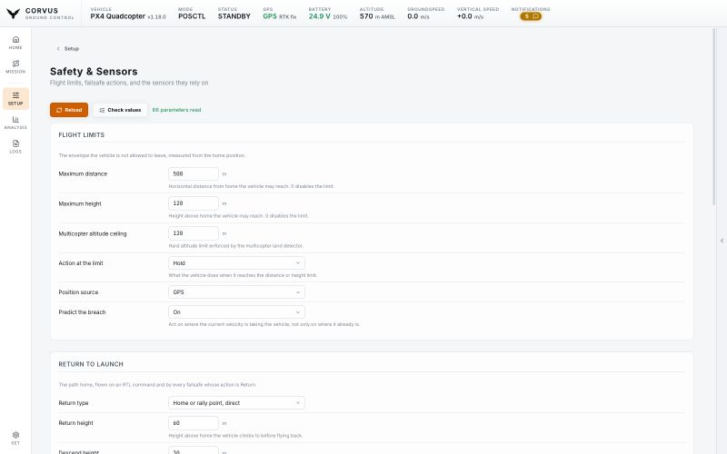
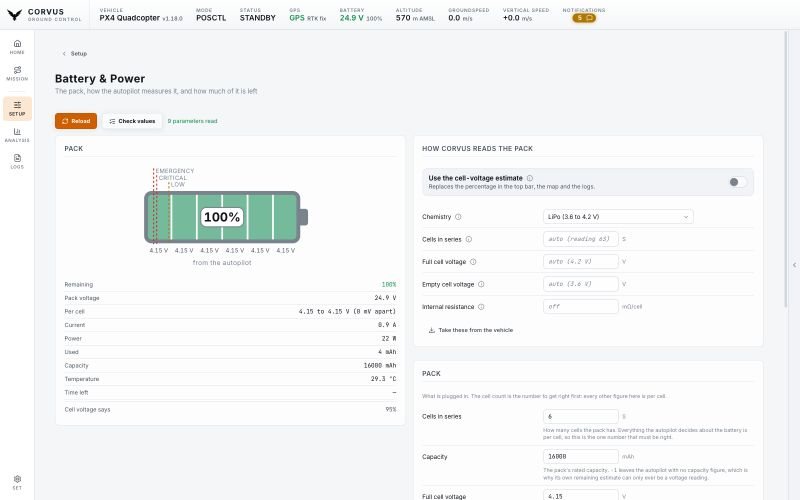

Set up
Safety, sensors and battery
The envelope the aircraft is allowed to use and what it does when something is lost, the sensors that many of those limits depend on, and the battery that ends every flight.


Limits
The Safety & Sensors page starts with the maximum distance and height from home, and what the aircraft does when it reaches either one.
Return to launch
The return profile: the height to return at and to descend to, the climb cone, and the time spent loitering above home before landing. These are the heights the Mission planner reads to draw a Return item the way it will actually be flown.
Failsafe actions
One action for every loss the autopilot can detect: RC, data link, position, battery and actuator. The levels the battery action reacts to are on the Battery & Power page with the rest of the pack, so that one number has one place where it is edited.
Distance sensor and optical flow
A Sensors card on the same page, because a ground lidar is what half those limits lean on. Each sensor is a tile that says whether it is up and what is feeding it, and opens onto its own page.
One switch
On the sensor's page, one switch brings it up. Corvus starts the driver and tells the estimator to use it, which is the step usually missed: a rangefinder reading perfectly while the EKF ignores it looks exactly like a working sensor. The state line always names both halves.
A sensor that is only half set up is shown as Incomplete, with one line for each missing piece: the estimator ignoring it, no serial port set to it, the wrong baud rate, a CAN port not running DroneCAN. One press of the switch completes it.
Where to plug it in
Every sensor model says which connector it belongs on (I2C, CAN or a serial port), and the serial port picker shows what already runs on each port, so a lidar is never put on the port your telemetry radio uses. On PX4 a port another driver already holds is refused with the reason.
Hardware presets
You do not own a SENS_TFMINI_CFG, you own a TFmini-S. One
dropdown lists the modules Corvus knows: Holybro H-Flow, Benewake TFmini-S,
TFmini Plus and TF03, and on ArduPilot the Matek 3901-L0X. Each row names
its bus and model, because picking "UART" when the module on the bench has a
CAN plug is exactly the mistake a list like this can prevent.
Choose one and Corvus writes its whole chain: the driver, the estimator, and the numbers from that module's datasheet (the height band a flow camera can track in, the noise a lidar's accuracy implies).
- Every parameter it would write is listed with its value and its reason before anything is sent.
- A module this firmware cannot run says so in its row, rather than failing once chosen.
- A parameter your firmware does not carry is named rather than silently skipped.
Custom, and your own parameters
The first row of that dropdown writes nothing and leaves everything to you: the model picker (Lightware, Lidar-Lite, Benewake, PMW3901, DroneCAN and the rest, or a sensor arriving over MAVLink), the serial port if it needs one, and the settings that really are per airframe: mounting offset, height limits and quality gates.
You can also name any parameter and it joins the form, read in the same batch and written the same way as everything else. The list is remembered in this browser profile, so a row you added because this aircraft needs it is still there next time.
On ArduPilot
The switch also sets what the driver depends on (the serial port and its baud rate, the CAN port, or the sensor's I2C address) and leaves the height source on the barometer, as ArduPilot's documentation asks. Optical flow goes into an EKF source set the way the ArduPilot wiki describes: the primary one on an aircraft without GPS, source set 2 beside the GPS otherwise, selected in flight with an RC switch.
Preflight checklist
The last card on the page is your own preflight checklist, because it asks the same question as the failsafes: is everything right before the aircraft leaves the ground. It turns the checklist window on the Home map on, puts that window away or brings it back, and Edit checklists opens the editor. The lists belong to the station, not to the aircraft, so the card works with no vehicle connected and stays editable while armed. How the window itself works is under Preflight checklist.
Battery & Power


The pack on one page, split the way the job is: the aircraft on the left, everything you can change on the right.
- Left: the pack as it is
- A battery drawn with the cells it actually has, filled to what is left, each cell's voltage under it and the failsafe levels marked along the bar. Underneath, the live numbers: pack voltage, current, watts, mAh used, temperature, and the spread between the best and worst cell, which is the first thing a tired pack tells you.
- Right: the settings
- Cells and capacity, the voltage a cell holds full and empty, the power module's voltage divider and amps per volt, and the levels the low battery failsafe fires at.
Every BAT_ parameter on PX4 and every BATT_ one on
ArduPilot lives here. That prefix is the whole rule for what is on this page
and what is on Safety & Sensors.
A second opinion on "how much is left"
The percentage an autopilot publishes is a capacity count that starts from a guess. A pack flown, charged to storage and flown again reads full on the second takeoff. ArduPilot publishes no percentage at all unless a capacity is set.
Corvus can read the cell voltage against a real discharge curve instead, with a table each for LiPo, Li-ion and LiFePO₄ (3.3 V per cell is a flat LiPo and a nearly full LiFePO₄). It corrects the voltage back to rest through the pack's internal resistance, since a 6S pulling 60 A through 5 mΩ per cell reads 1.8 V low in a climb.
Neither reading is right in every case, so both are computed on every frame and both are on screen. One switch chooses which one the top bar, the map and the logs go by, and the top bar says on hover which one you are reading and what the other one thinks.
- Cell count is worked out the moment the battery is plugged in, the one moment the reading is unambiguous (19.8 V is a fresh 5S and a tired 6S), then held for the flight. You can also pin it by hand.
- A smart or DroneCAN battery that reports its own cells is believed over any of this, and its weakest cell is drawn where you can see it.